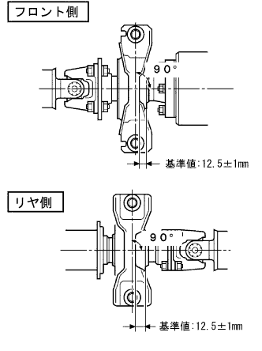

Installation of Transfer Extension Housing Oil Seal (4WD) |
| 1. Transfer extension housing oil seal installation |
Use the SST and hammer to the extension housing to the extension housing to the position of the figure.
 |
Apply a small amount of MP grease No.2 to the lip of the oil seal.
| 2. Procellation Shaft with Center Bearing Assem |
 |
Remove the SST from the extension housing and insert the propeller wariz center bearing shaft ASSY.
 |
Temporarily tighten the interimide shaft ASSY with four bolts.
 |
Combine the combined mark of the propeller shaft asser rr and a differential flange, and attach the propellashaft Assemia RR with four bolts, washer and nuts each.
| 3. Proposhaft with Center Bearing ASSY book |
|  |
Use a jack to lift the rear axle housing and load the suspension.
The front and rear center support bear housing are adjusted so that the end face and the rear end of the cushion are within the range of the reference value.
Confirm that the center support bearing bracket center line is at a right angle to the propeller shaft axis.
|
Tighten the four bolts.